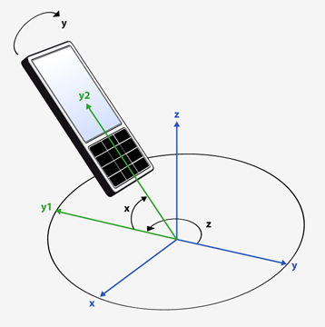
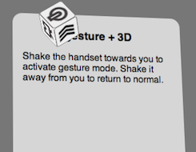
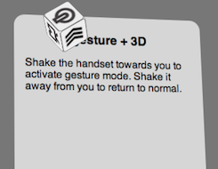

In addition to simple 90° shifts between portrait and landscape orientation, the browser can respond to much finer and more complex gestures, using three dimensional readings from the device's compass and accelerometer.
Compass Data
The device's compass measures its orientation in space, relative to the Earth's magnetic field. Data from the compass is available via the window's deviceorientation event, which yields three values:
- event.alpha measures simple geographic orientation as rotations around the device's z axis. With the device level to the ground, pointing it in different directions yields an alpha of &plumin; 180°, with zero at magnetic south.
- event.beta measures any additional tipping (pitch) of the device along its x axis, also &plumin; 180°. When users stand and look down at the device they hold, a typical beta value is 45°.
- event.gamma measures any additional side-to-side roll along the device's y axis, &plumin; 90°.
The device's orientation is represented as the accumulated sequence of these three angles. This figure shows alpha as a z rotation, beta as x, and gamma as y:

Accelerometer Data
The device's accelerometer measures gravitational forces, including the Earth's strong gravitational pull, and not confined to relative motion through space.
The accelerometer's readings are available via the window's devicemotion event. Each of the device's axes is measured in tenths of a gravitational unit (g):
- event.acceleration.x for horizontal motion, such as side-to-side shaking. If the device rests on its left or right edges, respective x/y/z readings are -10/0/0 or 10/0/0.
- event.acceleration.y for vertical motion. If the device rests on its bottom or top edges, respective x/y/z readings are 0/-10/0 or 0/10/0.
- event.acceleration.z for forwards or backwards motions. If the device is face up or face down, respective x/y/z readings are 0/0/-10 or 0/0/10.
The devicemotion event also produces x/y/z readings for event.accelerationIncludingGravity, which is intended to distinguish accelerometer from gyroscope readings. Since the device does not feature a gyroscope, these values match those of event.acceleration.
This figure shows the accelerometer's coordinate system:

Example
This example uses accelerometer readings to enter a game-like gestural application mode in which the main reading panel tips and sways based on compass readings, and otherwise static icons organize themselves into a cube that rotates in space. (The main operating mode can be previewed with Google Chrome running on a laptop.)
 
 A quick pulling gesture along the device's z axis towards the user enters the mode, and a pushing gesture leaves it. It uses a simple system to distinguish such quick motions from orientation shifts: comparing acceleration.z values from those cached from the previous devicemotion event. Only when the difference exceeds a certain threshold does the application change modes, which is unlikely to occur from relatively slower shifts in the device's orientation.
The main operating mode reflects the deviceorientation event's beta and gamma values as x/y rotations, as well as other 3D transforms. Each event modifies various elements' WebkitTransform CSS property directly, and additional CSS transitions smooth out each animation.
Setting a Threshold
Once initiated, the open-ended gestural interface mode shown above moves screen elements continuously depending on the device's tilt in relation to the ground. Alternately, you may want to enhance a more conventional interface with relatively unobtrusive gesture-triggered functions. To do so may require entering a mode within which gestural shifts are assigned significance. Setting a threshold prevents the interface from responding too sensitively.
The following simple example (also viewable within Google Chrome on a laptop) displays orientation state within two meter elements, but only after you touch the button at the bottom of the screen. Each meter alerts you when the device tilts past a certain threshold relative to that initial orientation. Use the sliding controls to modify this threshold.
A deviceorientation handler updates the HTML5 <meter> tags, whose values are set to display only when the button is pressed:
var meterBeta = document.querySelector('meter:first-of-type'); var meterGamma = document.querySelector('meter:last-of-type'); window.addEventListener('deviceorientation', adjustMeters); function adjustMeters(e) { meterBeta.value = e.beta; meterGamma.value = e.gamma; }
A touch handler assigns the meter's optimum value based on current orientation, along with low and high values outside of which the meter changes color:
var thresholdX = 10; var thresholdY = 10; app.button.addEventListener('touchstart', enterMode); function enterMode(e) { e.preventDefault(); var oGamma, oBeta; oGamma = meterGamma.optimum = meterGamma.value; oBeta = meterBeta.optimum = meterBeta.value; meterGamma.low = oGamma - thresholdX; meterBeta.low = oBeta - thresholdY; meterGamma.high = oGamma + thresholdX; meterBeta.high = oBeta + thresholdY; }
XXX 8.5 Device Gesture
As shown in Tipping the Handset, applications can respond to simple 90-degree shifts in orientation when users tip the handset between portrait and landscape view. This section shows how to interpret data from the handset's various sensors — compass, accelerometer, and possibly gyroscope — to detect more detailed movements, such as tipping or shaking gestures. It demonstrates how gestural operating modes may help enhance an application without interfering with access to core functionality.
>>> Accelerometer and Gyroscope Input
window.addEventListener('devicemotion', function(event) { event.acceleration.x; // horizontal event.acceleration.y; // vertical event.acceleration.z; // front-to-back });
>>> Compass Input
window.addEventListener('deviceorientation', function(event) { event.alpha; // event.beta; // event.gamma; // });
Y = (event.beta) X = (event.gamma +- 90)


>>> Gestural Thresholds and Modes
ooo Orientation and Motion
Browser 8_5 allows web apps to respond to simple 90-degree shifts in device orientation via the orientation media query or the window's orientationchange event. It also enables far more detailed access to the accelerometer and compass sensors via the DeviceOrientation API. These sensor values enable a wide variety of gestural interfaces, and may provide additional context for location-based applications.
The N9's accelerometer detects forceful motions initiated by users, such as shaking gestures, along with the Earth's background gravity. Readings are available via the window's devicemotion event, whose event.accelerationIncludingGravity yields x, y, and z values. This coordinate system is similar to that used to position screen elements, with x increasing from left to right, but with y increasing bottom to top. Readings along the z axis increase outward from the face of the screen. Units are measured in tenths of a G, resulting in the following x/y/z readings for the handset at rest:
- Face up: 0, 0, -10
- Face down: 0, 0, 10
- Standing on bottom edge: 0, -10, 0
- Standing on top edge: 0, 10, 0
- Standing on left edge: -10, 0, 0
- Standing on right edge: 10, 0, 0
The range of values from devicemotion events is illustrated below:
Note: Because the handset does not have a gyroscope, readings from event.acceleration match those of event.accelerationIncludingGravity, and they cannot reliably detect motion independently of earth's gravity. To test whether acceleration readings are derived from a gyroscope, perform an initial test if the x/y/z values for each match. If so, applications may need to filter out earth's gravity to calculate relative motion.
While accelerometer readings can be used in some cases to determine orientation relative to earth's gravity, compass readings are necessary for overall geospatial orientation. Compass readings are available via the window's deviceorientation event:
- event.alpha measures rotation around the z axis in degrees. A value of 0 means the top edge of the handset is pointing south, while 180 or -180 is north.
- event.beta measures rotation around the x axis, with a range of -180 to 180 degrees relative to a face-up orientation. If the handset is standing on its bottom edge, the beta is 90.
- event.gamma measures rotation around the y axis, with a range of -180 to 180 degrees relative to a face-up orientation. If the handset is standing on its left or right edges, the gamma is -90 and 90, correspondingly.
The range of values from deviceorientation events is illustrated below:
Note: By default, when tipping the handset, the browser shifts content from portrait to landscape display and back. There is no standard way to lock orientation to prevent conflicts with orientation- or motion-driven applications.
ooo Gestural interface modes
Motion- and orientation-enabled applications should be sensitive to the context in which they operate. Most gaming applications, for example, effectively have a single mode of operation. The following example shows how tilting gestures affect a flight simulator application:
Gestures may also be used to marginally supplement more conventional functionality. The example shown in The execCommand editing API section illustrates how gestures may help users edit text elements. Such gestural modes work best by setting a threshold at which gestures take effect. Since hidden gestural modes are relatively unfamiliar and may lead to unintended results, applications should offer them on an optional basis.
In this case, when tapping within an editable content block, a focus handler would capture the initial degree of tilt against which subsequent gestures would be measured.
function focusHandler(e) {
isEditing = true;
initialTilt = currentTilt;
}
function blurHandler(e) {
isEditing = false;
}
Subsequent executions of the deviceorientation handler would ignore gestures within a specified threshold:
function deviceorientationHandler(e) {
currentTilt = e.gamma;
if (! isEditing) return(false);
if (! prefersGesturalEditing) return(false);
var tiltThreshold = 20; // degree variance to trigger editing
if ( (currentTilt < (initialTilt + tiltThreshold) ) &&
( (currentTilt > (initialTilt - tiltThreshold) ) ) ) {
return(false); // gesture is within threshold; ignore
}
else if (currentTilt < initialTilt) {
// left-tilting gesture outside threshold:
document.execCommand('delete');
}
else if (currentTilt > initialTilt)
// right-tilting gesture outside threshold:
document.execCommand('forwardDelete');
}
}
This sample application allows users who are editing text to tilt the handset to delete characters more easily. Unlike the gaming scenario noted above, users can be assumed to hold the handset relatively still when entering the text-editing mode, because they would need to press keyboard buttons. Users who choose to enable such a gestural mode may then find it natural to tilt the device relative to that initial position.